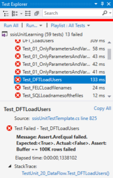

One of the drawbacks of ssisUnit is that it has only its own test runner. You can run the tests either using GUI or the console application, but the output is not that easy to parse and to present on the report. I’m used to working with Pester output or using NUnit/MSTest frameworks that integrates nicely with other tools. In this post, I will show you how to prepare and execute ssisUnit tests using MSTest framework, how to automate this process, and how to run those tests with TFS (or VSTS).
I work a lot with TFS. It has a neat feature - you can run tests during the build or release and verify how your code is doing. The goal is: I want to run ssisUnit tests of my ssisUnitLearning project in TFS and see the outcome in the reports.
 On the picture above three of my four tests failed. Select DFT_LoadUsers test - it failed because of the DefaultBufferMaxRow setting for the Data Flow Task. This test is written for
On the picture above three of my four tests failed. Select DFT_LoadUsers test - it failed because of the DefaultBufferMaxRow setting for the Data Flow Task. This test is written for 20_DataFlow.dtsx - the package to load the dbo.Users table using Data Flow Task, not SQL Task. There are two settings for the DFT LoadUsers I don’t want to be changed: DefaultBufferMaxRows and DelayValidation. Apparently, the number of rows is not set to the required value.
PropertyCommand
To check for the package’s setting I use PropertyCommand - it can read almost everything you need from the package. Almost, because it does not read from the _Data Flow Task_s elements, so, for example, you won’t read the Derived Column, Conditional Split or OLEDB Destination parameters. To see what you are able to get or set, take a look at the LocatePropertyValue() method in the PropertyCommand.cs script. At the end you will find some examples, like:
\Package\Sequence Container\Script Task.Properties[Description]
And through the method’s code, there are string checks for the keywords: Package, Variables, Properties, Connections, EventHandlers. You just have to write the path using one of them.
To verify my DFT_Users task, I use two paths:
\Package\DFT LoadUsers.Properties[DefaultBufferMaxRows] \Package\DFT LoadUsers.Properties[DelayValidation]
Nothing extraordinary, but works. You can use it for example to check the standards of your SSIS packages (like: every task’s Description has to be different than the default value or the checkpoint file has the same name as the package, but different extension, …). The file 20_DataFlow.ssisUnit test is located in the Tests folder. Now, to the
MSTest part
MSTest v2 is the open source test framework by Microsoft. I will not write a lot about it. If you want to learn more - read the excellent blog posts by Gérald Barré.
I took the idea and parts of the code from Ravi Palihena’s blog post about ssisUnit testing and his GitHub repository. Then I read the source code of the SsisUnitTestRunner, SsisUnitTestRunnerUI and posts by Gérald and changed the tests a bit.
I will use MSTest to execute ssisUnit tests from the file 20_DataFlow.ssisUnit. For that, I created a new Visual C# > Test > Unit Test Project (.NET Framework) - ssisUnitLearning.MSTest - within the solution. I also set the reference to the SsisUnit2017.dll and SsisUnitBase.dll libraries and loaded required namespaces
using SsisUnit; using SsisUnitBase.EventArgs;
I decided that each test file has its own class with the same name as the name of the ssisUnit file. But the name of the class can’t start with the number, so I added a TestUnit prefix. I load the ssisUnit tests at the beginning, and it’s enough to do it once, so I add the ClassInitialize attribute to the Init() method. The tests are executed from the .dll file created after compilation, and I chose to load the .ssisUnit file with all the tests using relative path.
[ClassInitialize] public static void Init(TestContext tc) { // ssisUnitLearningMSTest.dll is in subfolder bin\Debug and Tests folder is parallel, that’s why ..\..\.. testSuite = new SsisTestSuite(@"..\..\..\Tests\01_OnlyParametersAndVariables.ssisUnit"); }
The Init() method has to follow the rules I got first from the error message: Method ssisUnitLearningMSTest.TestUnit_01_OnlyParametersAndVariables.Init has wrong signature. The method must be static, public, does not return a value and should take a single parameter of type TestContext. Additionally, if you are using async-await in method then return-type must be Task. Also the testSuite parameter, that holds the .ssisUnit file contents has to be static.
private static SsisTestSuite testSuite; private SsisUnitBase.TestResult testResult; private Test test; private Context context;
private bool isTestPassed;
private List messages = new List();
The other variables are:
testResultholds the result of the ssisUnit testtestis the ssisUnit test objectcontextis the ssisUnit test contextisTestPassedhas the information if the test succeededmessagesis a list of all assertions' errors in the ssisUnit test
Each test is written as a class decorated by the TestMethod attribute. The tests are loaded to the testSuite object, so to get the ssisUnit test I want to run I get it from the Tests dictionary by the name. Then I create the context for it.
ssisUnit uses events and responses. When the assertion completes, the AssertCompleted event is called. I subscribe to this event before running the test and unsubscribe after the test is executed and all asserts are finished. I also set the flag isTestPassed to true. It will be set to false if any of the assertions fail.
In the end, I run two MSTest asserts. The second checks if all the assertions were successful. If not it writes all the error messages. But as I set isTestPassed flag as true in the beginning the MSTest’s assert will always return true, even if I don’t run the tests. So I added the first assertion to check if the test was executed. This can happen if there are errors in the .ssisUnit or .dtsx file.
[TestMethod] public void DFT_LoadUsers() { test = testSuite.Tests[“DFT LoadUsers”]; context = testSuite.CreateContext();
testSuite.AssertCompleted += TestSuiteAssertCompleted;
isTestPassed = true;
bool rs = test.Execute(context);
testSuite.AssertCompleted -= TestSuiteAssertCompleted;
Assert.AreEqual(true, rs, "Package did not execute");
Assert.AreEqual(true, isTestPassed, System.String.Join(";", messages));
}
The TestSuiteAssertCompleted method verifies the TestExecResult of each assertion and sets the isTestPassed flag. If there is an error, it’s added to the messages list.
private void TestSuiteAssertCompleted(object sender, AssertCompletedEventArgs e) { if (e.AssertName != null) { testResult = e.TestExecResult; isTestPassed = isTestPassed & e.TestExecResult.TestPassed; if(e.TestExecResult.TestPassed == false) { messages.Add(e.AssertName + " failed: " + e.TestExecResult.TestResultMsg); } } }
using SsisUnit; using SsisUnitBase.EventArgs; using System.Collections.Generic; using Microsoft.VisualStudio.TestTools.UnitTesting;
namespace ssisUnitLearningMSTestExample { [TestClass] public class TestUnit_20_DataFlow { private static SsisTestSuite testSuite;
private SsisUnitBase.TestResult testResult;
private Test test;
private Context context;
private bool isTestPassed;
private List messages = new List();
\[ClassInitialize\]
public static void Init(TestContext tc)
{
// ssisUnitLearningMSTest.dll is in subfolder bin\\Debug and Tests folder is parallel, that's why ..\\..\\..
testSuite = new SsisTestSuite(@"..\\..\\..\\Tests\\20\_DataFlow.ssisUnit");
}
private void TestSuiteAssertCompleted(object sender, AssertCompletedEventArgs e)
{
if (e.AssertName != null)
{
testResult = e.TestExecResult;
isTestPassed = isTestPassed & e.TestExecResult.TestPassed;
if(e.TestExecResult.TestPassed == false)
{
messages.Add(e.AssertName + " failed: " + e.TestExecResult.TestResultMsg);
}
}
}
\[TestMethod\]
public void DFT\_LoadUsers()
{
test = testSuite.Tests\["DFT LoadUsers"\];
context = testSuite.CreateContext();
testSuite.AssertCompleted += TestSuiteAssertCompleted;
isTestPassed = true;
bool rs = test.Execute(context);
testSuite.AssertCompleted -= TestSuiteAssertCompleted;
Assert.AreEqual(true, rs, "Package did not execute");
Assert.AreEqual(true, isTestPassed, System.String.Join(";", messages));
}
}
}
There has to be an easier way!
In the beginning, I created two MSTest files - first for 01_OnlyParametersAndVariables.ssisUnit and second for 20_DataFlow.ssisUnit. Only to see if it works, and how to use it. When the number of tests started to grow, I started searching for the automatic test generation. I found idea sparking post by Colin Breck, watched the T4 Templates course on Pluralsight and prepared the solution.
I started by creating the template using right-click on the ssisUnitLearning.MSTest project, selecting New Item and the Text Template. Then I copied and pasted the content from one of the test files and modified it with two loops - for each .ssisUnit test file I create the class that contains the test method for each ssisUnit test. ReadTestFile() and CleanName() methods are modified versions of the code from the formerly mentioned course on Pluralsight. And that’s it! When you compile the project, the template will generate all the test classes and methods, and they will be available in the .dll file to use in the Test Explorer. The code is available in the ssisUnitTestTemplate.tt script.
TFS part
The last thing is to use the MSTest project in the TFS build. The whole building and deployment process of the database, SSIS project, tests, configuration, etc. is a topic for one of the next posts, but for running the tests it’s enough to:
- use the MSBuild or Visual Studio Build task to compile the project (I used MSBuild)
- use the Visual Studio Test task and leave all the defaults as is
You should now have the reports in TFS that show you the ssisUnit tests results.
Summary
Basically, to run the ssisUnit tests using MSTest I had to port some parts of the ssisUnitTestRunner code to the framework. Then, to automate test generation, I used T4 template to iterate through all the test files and defined tests. Now it’s enough to prepare the next ssisUnit suite, save and compile the MSTest project to have all the tests available in Visual Studio’s Test Runner or - after the project builds - in TFS.


{kind=link}